Sesión 3: Introducción al análisis de regresión
Curso: Análisis de datos
Magíster en Data Science - Universidad del Desarrollo
El análisis de regresión
En las aplicaciones de la ciencia de datos, es muy común estar interesado en la relación entre dos o más variables.
El análisis de regresión es una técnica en la cual buscamos encontrar una función que pueda describir la relación observada en los datos entre dos o mas variables.
Por ejemplo, podríamos querer relacionar los pesos de los individuos con sus alturas…
- ¿son los más altos, más pesados?
- y… ¿cuánto más pesados?
El análisis de regresión: Regresión Simple
- Caso más sencillo: univariada o regresión lineal simple.
- Una variable que deseamos explicar o predecir (Y) como función de otra (X).
- Buscamos la pendiente e intercepto de una funciónla recta de la forma:
\[Y = \alpha + \beta X\]
donde:
- Y es la variale dependiente o que deseamos entender
- X es la variable independiente
- \(\beta\) es la pendiente de la recta
- \(\alpha\) es la constante o intersección (el valor de y cuando x=0)
El análisis de regresión
Buscamos los coeficientes de la función entre Y y X: constante y pendiente
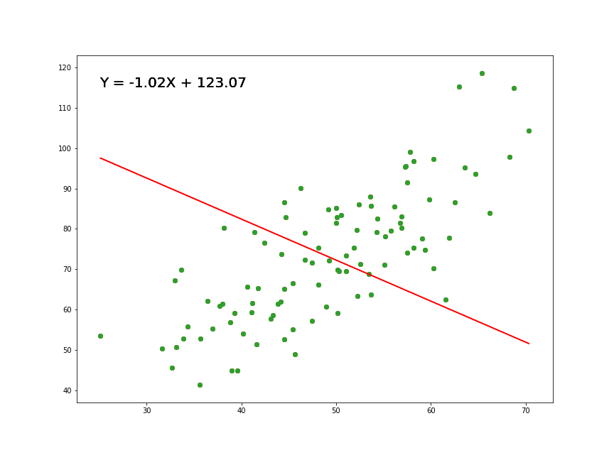El análisis de regresión
Para esto, pensamos que la variable que deseamos entender (Y, variable dependiente) se puede descomponer en dos partes:
una que es sistemática o que se puede explicar directamente con una o más variables independientes (Xs o regresores)
y otra que es no sistemática o error (\(\mu\) o \(epsilon\)) , que es aquella parte que no se puede explicar y representa a la aleatoriedad del fenómeno.
El análisis de regresión
La parte sistemática entonces la describimos con una forma funcional, que depende de otras variables o regresores.
Esta forma funcional puede:
- ser lineal univariada,
- lineal múltiple o
- no lineal.
. . . El tipo de forma funcional, definirá el tipo de regresión de la que estemos hablando.
El análisis de regresión
Ventajas del análisis de regersión: es facil decsribir cuantitaivamente una rlación.
Esquemáticamente, los elementos son:
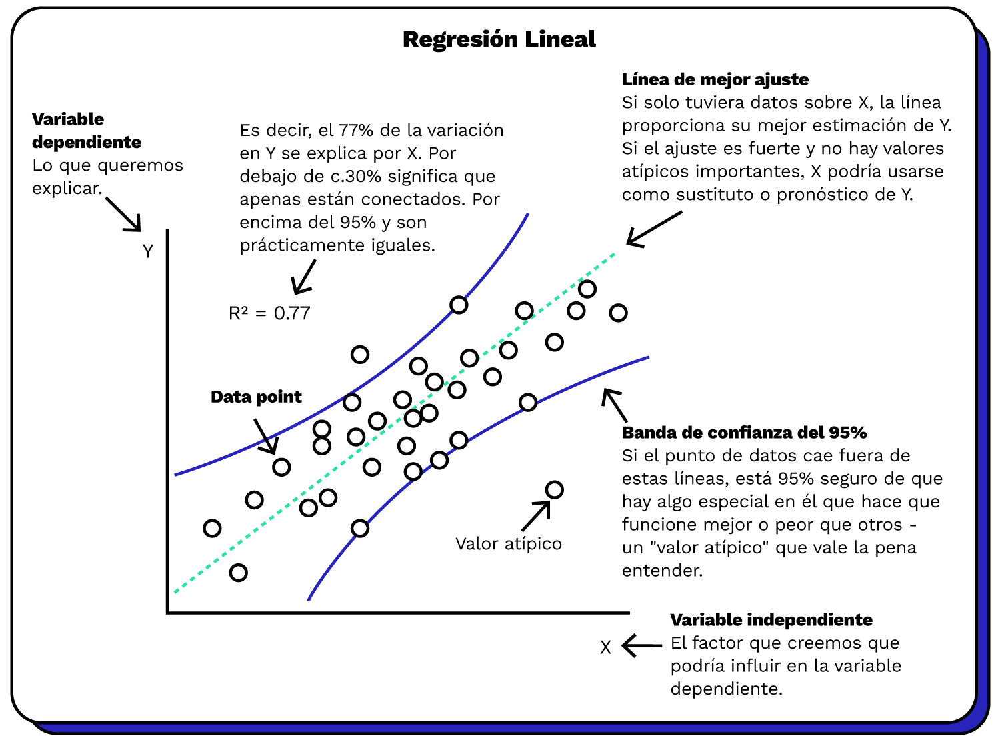¿Para qué hacer regresiones?
Podemos pensar en tres uso, al menos, del análisis d eregresión:
- Describir cuantitativamente una relación empírica
- Probar hipótesis sobre ciertas teorías
- Realizar predicciones
Regresión simple y scatterplot
Por ejemplo, pensemos en la relación entre los años de educación y el ingreso de las personas. Este ha sido un tema constante de estudio en diversas disciplinas, especialmente economía.
Usemos un subconjunto de datos de la encuesta CASEN 2022.
| id_vivienda | folio | id_persona | region | area | nse | expr | tot_per_h | edad | sexo | pco1_a | e3 | o6 | o8 | y1 | ytrabajocor | esc | desercion | educ | contrato | |
|---|---|---|---|---|---|---|---|---|---|---|---|---|---|---|---|---|---|---|---|---|
| 0 | 1000901 | 100090101 | 1 | Región de Ñuble | Rural | Bajo-medio | 43 | 3 | 72 | 2. Mujer | No | 2. No | 2. No | NaN | NaN | NaN | 1.0 | NaN | Básica incompleta | NaN |
| 1 | 1000901 | 100090101 | 2 | Región de Ñuble | Rural | Bajo-medio | 43 | 3 | 67 | 1. Hombre | Sí | 2. No | NaN | NaN | NaN | NaN | 4.0 | NaN | Básica incompleta | NaN |
| 2 | 1000901 | 100090101 | 3 | Región de Ñuble | Rural | Bajo-medio | 44 | 3 | 40 | 2. Mujer | No | 2. No | NaN | NaN | No sabe | 411242.0 | 15.0 | NaN | Técnico nivel superior completo | No sabe |
| 3 | 1000902 | 100090201 | 1 | Región de Ñuble | Rural | Bajo-medio | 51 | 4 | 56 | 1. Hombre | No | 2. No | 2. No | NaN | NaN | NaN | NaN | NaN | No sabe | NaN |
| 4 | 1000902 | 100090201 | 2 | Región de Ñuble | Rural | Bajo-medio | 51 | 4 | 25 | 2. Mujer | No | 2. No | 2. No | NaN | NaN | NaN | 12.0 | Deserción | Media humanista completa | NaN |
Regresión simple y scatterplot
Y lo agruparemos por región, para facilitar el ejemplo:
import pandas as pd
# Supongamos que tienes un DataFrame llamado 'data' con las columnas 'region', 'ytrabajocor', 'esc' y 'desercion'
# Agrupar por 'region' y aplicar funciones de agregación
casen_2022_region = casen_2022.groupby('region').agg({'ytrabajocor': 'mean', 'esc': 'mean'}).reset_index()
# Ahora contiene los resultados agregados por región
casen_2022_region.head()| region | ytrabajocor | esc | |
|---|---|---|---|
| 0 | Región de Tarapacá | 658026.6250 | 11.679582 |
| 1 | Región de Antofagasta | 791351.8125 | 11.833934 |
| 2 | Región de Atacama | 666128.3125 | 11.126735 |
| 3 | Región de Coquimbo | 656137.8750 | 10.973584 |
| 4 | Región de Valparaíso | 611298.1250 | 11.559877 |
Regresión simple y scatterplot
Realicemos un scatter sencillo:
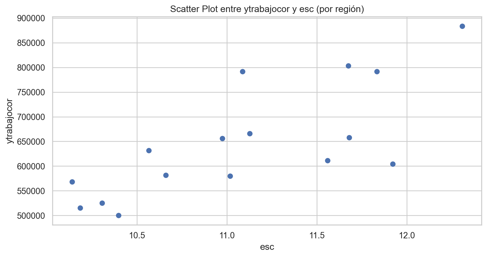
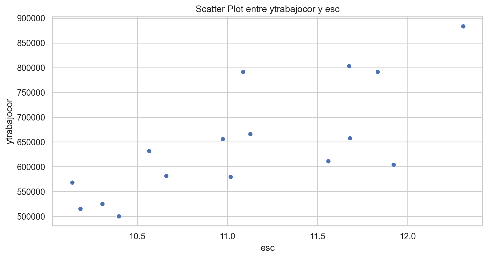
import seaborn as sns
import matplotlib.pyplot as plt
# Suponiendo que casen_2022 es tu DataFrame
sns.regplot(data=casen_2022_region, y='ytrabajocor', x='esc', ci=95, line_kws={'color': 'magenta'}) # El argumento ci controla el intervalo de confianza
plt.ylabel('ytrabajocor')
plt.xlabel('esc')
plt.title('Scatter Plot con Línea de Regresión y Intervalo de Confianza')
plt.show()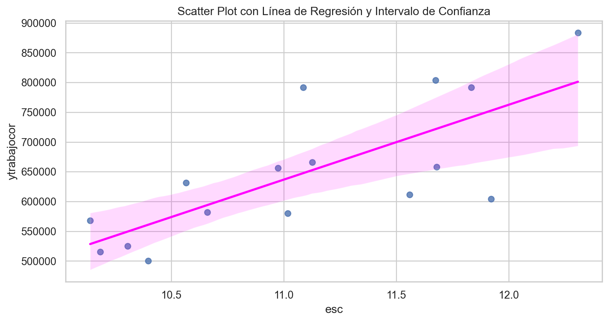
import seaborn as sns
import matplotlib.pyplot as plt
# Suponiendo que casen_2022_region es tu DataFrame
sns.regplot(data=casen_2022_region, y='ytrabajocor', x='esc', ci=95, line_kws={'color': 'magenta'}) # El argumento ci controla el intervalo de confianza
# Procesar y agregar etiquetas de región a los puntos
for i, label in enumerate(casen_2022_region['region']):
last_word = label.split()[-1] # Obtener la última palabra de la etiqueta
plt.text(casen_2022_region['esc'][i], casen_2022_region['ytrabajocor'][i], last_word, fontsize=8, ha='left', va='bottom')
plt.ylabel('ytrabajocor')
plt.xlabel('esc')
plt.title('Scatter Plot con Línea de Regresión y Etiquetas de Región (Última Palabra)')
plt.show()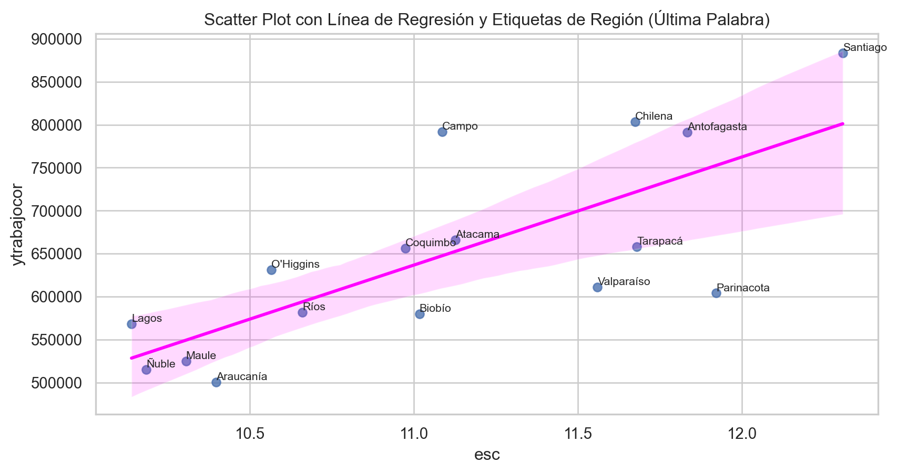
Podemos ver que se aprecia una relación positiva: a mayor escolaridad promedio, mayor salario promedio por región.
Especificación
Llamamos especifiación al precisar la relación entre las variables que deseamos estimar. . . .
En nuestro caso, la función base que queremos entender es entre salario y educación: . . .
\[ \text{Salario} = f(Educacion))\]
Este es una relación teorica entre variables aleatorias, porque no hemos especificado tres elementos cruciales:
- agregar el error aleatorio
- especificar una forma funcional
- definir una forma de medir las variables en los datos
En nuestro caso, entonces el modelo especificado sería:
. . . \[ \text{ingreso del trabajo}_i = \alpha + \beta \text{años educación}_i + \mu_i\]
Interpretación
Con nuestro modelo especificado:
\[ \text{ingreso del trabajo}_i = \alpha + \beta \text{años educación}_i + \mu_i\]
Podemos interpretar \(\beta\) y \(alpha\):
\(\beta = \frac{\partial ingr}{\partial educ}\): un año adiciónal de educación, en cuanto incrementa el salario (si nada más cambia)
\(\alpha\) valor esperado de y, si x=0…
Modelo poblaciónal y estimación
Este modelo especificado esta definido en la población:
\[ \text{ingreso del trabajo}_i = \alpha + \beta \text{años educación}_i + \mu_i\]
pero necesitamos calcularlo con la muestra…. por lo cual tenemos estimadores para los coeficientes poblacionales!
\[\hat{ \text{ingreso del trabajo}}_i = \hat{\alpha} + \hat{\beta} \text{años educación}_i \]
Modelo poblaciónal y estimación
El método más comun de estimación es el de los mínimos cuadrados ordinarios. Veremos detalles sobre la estimación, supuestos, propiedades estadísticas la proxima sesión.
Por ahora, pensaremos que es el método que busca la línea que produce menores residuos, es decir, menor diferencia entre evalor predicho (linea de regresión).
\[ \hat{\mu}_i= y_i-\hat{y}_i\]
import seaborn as sns
import matplotlib.pyplot as plt
import numpy as np
import statsmodels.api as sm
# Suponiendo que casen_2022_region es tu DataFrame
sns.set(style='whitegrid') # Configuración del estilo del gráfico
# Agregar una columna de constante al DataFrame
casen_2022_region['constante'] = 1
# Crear el gráfico de dispersión con la línea de regresión
sns.regplot(data=casen_2022_region, y='ytrabajocor', x='esc', ci=95, line_kws={'color': 'magenta'}, scatter_kws={'color': 'blue'}) # El argumento ci controla el intervalo de confianza
# Ajustar el modelo de regresión lineal
y = casen_2022_region['ytrabajocor']
X = casen_2022_region[['esc', 'constante']] # 'constante' es la columna que agregamos para el término constante
modelo = sm.OLS(y, X).fit()
# Calcular las predicciones ('ytrabajocor_pred') a partir del modelo
casen_2022_region['ytrabajocor_pred'] = modelo.predict(X)
# Agregar líneas que conecten cada punto a la línea de regresión
for i in range(len(casen_2022_region)):
x_point = casen_2022_region['esc'][i]
y_point = casen_2022_region['ytrabajocor'][i]
y_pred = casen_2022_region['ytrabajocor_pred'][i] # Usamos las predicciones del modelo
# Línea que conecta el punto a la línea de regresión
plt.plot([x_point, x_point], [y_point, y_pred], linestyle='--', color='gray')
plt.ylabel('ytrabajocor')
plt.xlabel('esc')
plt.title('Lineas de regresión y residuos')
plt.show()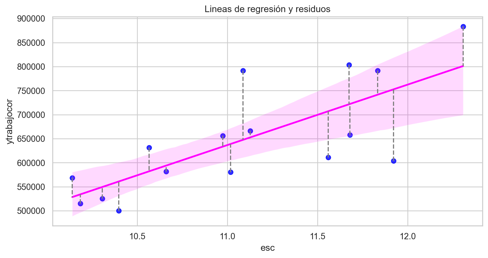
Es decir, minimiza \[\sum_{i}^{n} \hat{\mu}_i \]
Modelo estimado
Por ahora, solo estimaremos el modelo directamente usando statsmodels
import pandas as pd
import statsmodels.api as sm
# Supongamos que 'casen_2022' contiene las columnas 'ytrabajocor' (variable dependiente) y 'esc' (variable independiente),
# y que puedes tener valores NaN en tus datos.
# Eliminar filas con valores NaN
casen_2022_clean = casen_2022_region.dropna(subset=['ytrabajocor', 'esc'])
# Agregar una columna de constantes para el término constante en el modelo
casen_2022_clean['constante'] = 1
# Definir las variables dependiente e independiente
y = casen_2022_clean['ytrabajocor']
X = casen_2022_clean[['constante', 'esc']] # Usar 'constante' como término constante
# Ajustar el modelo de regresión lineal
modelo = sm.OLS(y, X).fit()
# Imprimir un resumen del modelo
print(modelo.summary()) OLS Regression Results
==============================================================================
Dep. Variable: ytrabajocor R-squared: 0.563
Model: OLS Adj. R-squared: 0.532
Method: Least Squares F-statistic: 18.07
Date: Sat, 09 Sep 2023 Prob (F-statistic): 0.000808
Time: 11:26:49 Log-Likelihood: -201.85
No. Observations: 16 AIC: 407.7
Df Residuals: 14 BIC: 409.3
Df Model: 1
Covariance Type: nonrobust
==============================================================================
coef std err t P>|t| [0.025 0.975]
------------------------------------------------------------------------------
constante -7.467e+05 3.29e+05 -2.272 0.039 -1.45e+06 -4.17e+04
esc 1.258e+05 2.96e+04 4.250 0.001 6.23e+04 1.89e+05
==============================================================================
Omnibus: 0.030 Durbin-Watson: 1.473
Prob(Omnibus): 0.985 Jarque-Bera (JB): 0.151
Skew: -0.072 Prob(JB): 0.927
Kurtosis: 2.547 Cond. No. 189.
==============================================================================
Notes:
[1] Standard Errors assume that the covariance matrix of the errors is correctly specified.import pandas as pd
import statsmodels.api as sm
# Supongamos que 'casen_2022' contiene las columnas 'ytrabajocor' (variable dependiente) y 'esc' (variable independiente),
# y que puedes tener valores NaN en tus datos.
# Eliminar filas con valores NaN
casen_2022_clean = casen_2022.dropna(subset=['ytrabajocor', 'esc'])
# Agregar una columna de constantes para el término constante en el modelo
casen_2022_clean['constante'] = 1
# Definir las variables dependiente e independiente
y = casen_2022_clean['ytrabajocor']
X = casen_2022_clean[['constante', 'esc']] # Usar 'constante' como término constante
# Ajustar el modelo de regresión lineal
modelo = sm.OLS(y, X).fit()
# Imprimir un resumen del modelo
print(modelo.summary()) OLS Regression Results
==============================================================================
Dep. Variable: ytrabajocor R-squared: 0.135
Model: OLS Adj. R-squared: 0.135
Method: Least Squares F-statistic: 1.371e+04
Date: Sat, 09 Sep 2023 Prob (F-statistic): 0.00
Time: 11:26:49 Log-Likelihood: -1.3153e+06
No. Observations: 87910 AIC: 2.631e+06
Df Residuals: 87908 BIC: 2.631e+06
Df Model: 1
Covariance Type: nonrobust
==============================================================================
coef std err t P>|t| [0.025 0.975]
------------------------------------------------------------------------------
constante -2.701e+05 8430.418 -32.035 0.000 -2.87e+05 -2.54e+05
esc 7.707e+04 658.196 117.100 0.000 7.58e+04 7.84e+04
==============================================================================
Omnibus: 165004.626 Durbin-Watson: 1.657
Prob(Omnibus): 0.000 Jarque-Bera (JB): 1073370403.828
Skew: 13.789 Prob(JB): 0.00
Kurtosis: 543.626 Cond. No. 42.3
==============================================================================
Notes:
[1] Standard Errors assume that the covariance matrix of the errors is correctly specified.Podemos ver que un año adicional de educación ase asocia con 126.000/77.000 app pesos mensuales, el resto constante.
¿y la constante, como la podemos interpretar?
Modelos simples y múltiples
Muchas veces una sola variable no es suficiente para describir bien un fenómeno. Necesitamos incluir más variables.
Esto puede ser:
- Una nueva variable
- Una forma funcional no lineal de la variable ya incluida
Nuestra interpretación del modelo no cambia, solo que ahora efectivamente estamos controlando por otros factores.
Modelos simples y múltiples
Probemos, agregar edad al modelo:
\[ \text{ingreso del trabajo}_i = \alpha + \beta_1 \text{años educación}_i + \beta_2 \text{edad}_i + \mu_i\]
import pandas as pd
import statsmodels.api as sm
# Supongamos que 'casen_2022' contiene las columnas 'ytrabajocor' (variable dependiente) y 'esc' (variable independiente),
# y que puedes tener valores NaN en tus datos.
# Eliminar filas con valores NaN
casen_2022_clean = casen_2022.dropna(subset=['ytrabajocor', 'esc', 'edad'])
# Agregar una columna de constantes para el término constante en el modelo
casen_2022_clean['constante'] = 1
# Definir las variables dependiente e independiente
y = casen_2022_clean['ytrabajocor']
X = casen_2022_clean[['constante', 'esc', 'edad']] # Usar 'constante' como término constante
# Ajustar el modelo de regresión lineal
modelo = sm.OLS(y, X).fit()
# Imprimir un resumen del modelo
print(modelo.summary()) OLS Regression Results
==============================================================================
Dep. Variable: ytrabajocor R-squared: 0.150
Model: OLS Adj. R-squared: 0.150
Method: Least Squares F-statistic: 7754.
Date: Sat, 09 Sep 2023 Prob (F-statistic): 0.00
Time: 11:26:49 Log-Likelihood: -1.3145e+06
No. Observations: 87910 AIC: 2.629e+06
Df Residuals: 87907 BIC: 2.629e+06
Df Model: 2
Covariance Type: nonrobust
==============================================================================
coef std err t P>|t| [0.025 0.975]
------------------------------------------------------------------------------
constante -7.37e+05 1.45e+04 -50.839 0.000 -7.65e+05 -7.09e+05
esc 8.792e+04 708.136 124.163 0.000 8.65e+04 8.93e+04
edad 7591.3242 192.583 39.419 0.000 7213.864 7968.784
==============================================================================
Omnibus: 165576.617 Durbin-Watson: 1.666
Prob(Omnibus): 0.000 Jarque-Bera (JB): 1120061445.830
Skew: 13.885 Prob(JB): 0.00
Kurtosis: 555.280 Cond. No. 272.
==============================================================================
Notes:
[1] Standard Errors assume that the covariance matrix of the errors is correctly specified.Modelos simples y múltiples
Es muy usual, agregar edad al cuadrado…. para representar que los salarios crecen con la edad hasta cierto punto, y luego empieza a decaer…
\[ \text{ingreso del trabajo}_i = \alpha + \beta_1 \text{años educación}_i + \beta_2 \text{edad}_i + \beta_3 \text{edad}^2_i + \mu_i\]
import pandas as pd
import statsmodels.api as sm
# Supongamos que 'casen_2022' contiene las columnas 'ytrabajocor' (variable dependiente), 'esc' (variable independiente),
# 'edad' (variable independiente) y puedes tener valores NaN en tus datos.
# Eliminar filas con valores NaN
casen_2022_clean = casen_2022.dropna(subset=['ytrabajocor', 'esc', 'edad'])
# Agregar una columna de constantes para el término constante en el modelo
casen_2022_clean['constante'] = 1
# Agregar una columna con 'edad' al cuadrado
casen_2022_clean['edad_cuadrado'] = casen_2022_clean['edad'] ** 2
# Definir las variables dependiente e independiente
y = casen_2022_clean['ytrabajocor']
X = casen_2022_clean[['constante', 'esc', 'edad', 'edad_cuadrado']] # Incluye 'edad_cuadrado'
# Ajustar el modelo de regresión lineal
modelo = sm.OLS(y, X).fit()
# Imprimir un resumen del modelo
print(modelo.summary()) OLS Regression Results
==============================================================================
Dep. Variable: ytrabajocor R-squared: 0.157
Model: OLS Adj. R-squared: 0.157
Method: Least Squares F-statistic: 5454.
Date: Sat, 09 Sep 2023 Prob (F-statistic): 0.00
Time: 11:26:49 Log-Likelihood: -1.3142e+06
No. Observations: 87910 AIC: 2.628e+06
Df Residuals: 87906 BIC: 2.628e+06
Df Model: 3
Covariance Type: nonrobust
=================================================================================
coef std err t P>|t| [0.025 0.975]
---------------------------------------------------------------------------------
constante -1.273e+06 2.46e+04 -51.789 0.000 -1.32e+06 -1.23e+06
esc 8.514e+04 712.733 119.463 0.000 8.37e+04 8.65e+04
edad 3.529e+04 1045.445 33.754 0.000 3.32e+04 3.73e+04
edad_cuadrado -302.7647 11.234 -26.950 0.000 -324.784 -280.746
==============================================================================
Omnibus: 166354.248 Durbin-Watson: 1.665
Prob(Omnibus): 0.000 Jarque-Bera (JB): 1155260651.345
Skew: 14.028 Prob(JB): 0.00
Kurtosis: 563.898 Cond. No. 2.46e+04
==============================================================================
Notes:
[1] Standard Errors assume that the covariance matrix of the errors is correctly specified.
[2] The condition number is large, 2.46e+04. This might indicate that there are
strong multicollinearity or other numerical problems.Ya no es lineal el modelo?
Ojo! La linealidad es en los parámetros, no en las variables.
La siguiente ecuación muestra un modelo lineal en el que el predictor 𝑥1 no es lineal respecto a y:
\(y = \beta_0 + \beta_1x_1 + \beta_2log(x_1) + \epsilon\)
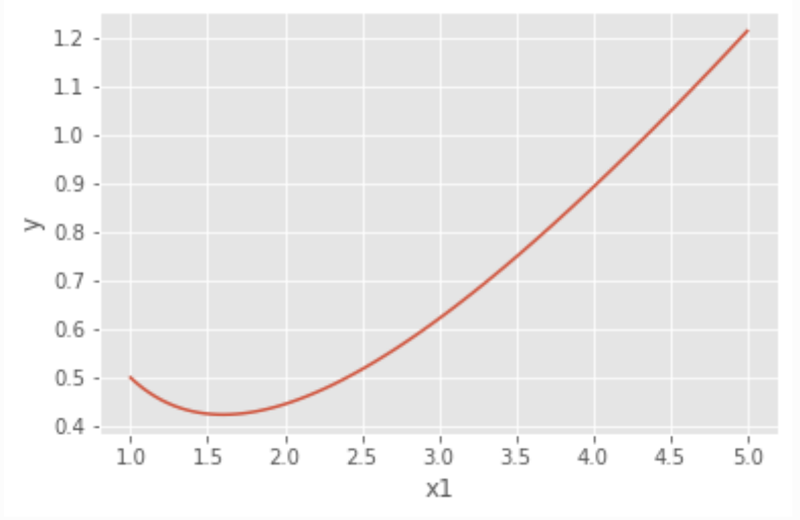En contraposición, el siguiente no es un modelo lineal:
\(y = \beta_0 + \beta_1x_1^{\beta_2} + \epsilon\)
Ya no es lineal el modelo?
En ocasiones, algunas relaciones no-lineales pueden transformarse de forma que se pueden expresar de manera lineal:
Modelo no-lineal a estimar: \(y = \beta_0x_1^{\beta_1}\epsilon\)
Solucion: pasamos todo a logaritmos:
\[log(y)=log(\beta_0) + \beta_1log(x_1) + log(\epsilon)\]
\[y^{'}=\beta_0^{'}+\beta_1x_1^{'} + \epsilon^{'}\]
Estimar el modelo y extraer los coeficientes.
Volvera a la forma funcional incial exponenciando los logaritmos.
- \(\beta_1\) es explicito.
- \(\beta_0^{'}=log(\beta_0)=> exp(log(\beta_0))\)
Un poco más sobre interpretación
Elementos clave en la interpretación de un modelo de regresión lineal:
- \(\beta_0\): Ordenada en el origen, valor esperado de \(y\) cuando todos los predictores son cero.
- \(\beta_j\): Coeficientes de regresión parcial de cada predictor, representan el cambio promedio esperado en \(y\) al aumentar en una unidad \(x_j\), manteniendo otros predictores constantes (“ceteris paribus”).
Un poco más sobre interpretación: Magnitud
Los coeficientes están medidos en las unidades que se está trabajando.
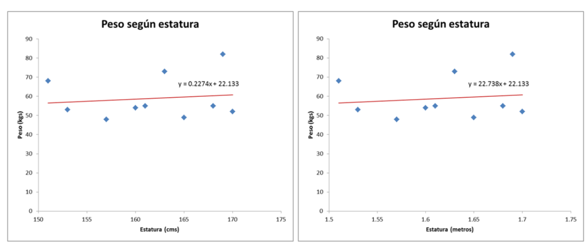Importancia de coeficientes parciales estandarizados: - Se obtienen al estandarizar las variables predictoras antes del ajuste del modelo. - \(\beta_0\) refleja el valor esperado de \(y\) cuando los predictores están en su promedio. - \(\beta_j\) indica el cambio promedio esperado en \(y\) al aumentar en una desviación estándar \(x_j\), manteniendo otros predictores constantes.
Causalidad, regresión y correlación
Importante tener en cuenta:
- Antes de intentar ajustar un modelo lineal a los datos observados, la persona debe determinar primero si existe o no una relación entre las variables de interés.
- Esto no implica necesariamente que una variable cause la otra (por ejemplo, puntajes más altos en la PSU no causan calificaciones superiores en la universidad), pero existe alguna asociación significativa entre las dos variables.
- Un diagrama de dispersión puede ser una herramienta útil para determinar la fuerza de la relación entre dos variables.
Causalidad, regresión y correlación
Importante tener en cuenta:
Si parece no haber asociación entre las variables explicativas y dependiente propuestas (es decir, el diagrama de dispersión no indica ninguna tendencia creciente o decreciente),
- entonces ajustar un modelo de regresión lineal a los datos probablemente no proporcionará un modelo útil.
- Una valiosa medida numérica de asociación entre dos variables es el coeficiente de correlación, que es un valor entre -1 y 1 que indica la fuerza de la asociación de los datos observados para las dos variables.
Una perspectiva histórica:
El origen de la técnica, podemos remontarlo a la genética.
Francis Galton estudió la variación y la herencia de los rasgos humanos. Entre muchos otros rasgos, Galton recolectó y estudió datos de altura de familias para tratar de entender la herencia. Mientras hacía esto, desarrolló los conceptos de correlación y regresión.
Pregunta: ¿qué tan bien podemos predecir la estatura de un niño basado en la estatura de los padres?
La técnica que desarrolló para responder a esta pregunta, la regresión, también puede aplicarse en muchas otras circunstancias.
Una perspectiva histórica:
Nota histórica:
- Galton hizo importantes contribuciones a la estadística y la genética…
- pero también fue uno de los primeros defensores de la eugenesia…
- un movimiento filosófico científicamente defectuoso favorecido por muchos biólogos de la época de Galton, pero con terribles consecuencias históricas.
Estudio de caso: ¿es hereditaria la altura?
Tenemos acceso a los datos de altura de familias recolectado por Galton, a través del paquete
HistData.Estos datos contienen las alturas de varias docenas de familias: madres, padres, hijas e hijos.
# Cargamos los paquetes que vamos a usar
import statsmodels.api as sm
import pandas as pd
import numpy as np
import seaborn as sns
# Si no tiene stats models, instalar: pip install statsmodels
# Cargar el conjunto de datos GaltonFamilies
galton_data = sm.datasets.get_rdataset("GaltonFamilies", package="HistData").data
# Mostrar las primeras filas del DataFrame
print(galton_data.head(4))| family | father | mother | midparentHeight | children | childNum | gender | childHeight | |
|---|---|---|---|---|---|---|---|---|
| 0 | 001 | 78.5 | 67.0 | 75.43 | 4 | 1 | male | 73.2 |
| 1 | 001 | 78.5 | 67.0 | 75.43 | 4 | 2 | female | 69.2 |
| 2 | 001 | 78.5 | 67.0 | 75.43 | 4 | 3 | female | 69.0 |
| 3 | 001 | 78.5 | 67.0 | 75.43 | 4 | 4 | female | 69.0 |
Análisis de caso: ¿es hereditaria la altura?
Para imitar el análisis de Galton, crearemos un conjunto de datos con las alturas de los padres y un hijo de cada familia seleccionado al azar:
# Filtrar por género masculino y seleccionar una muestra de una altura de hijo por familia
galton_heights = galton_data[galton_data['gender'] == 'male']\
.groupby('family')\
.apply(lambda group: group.sample(n=1))\
.reset_index(drop=True)\
.loc[:, ['father', 'childHeight']]\
.rename(columns={'childHeight': 'son'})
galton_heights.head()| father | son | |
|---|---|---|
| 0 | 78.5 | 73.2 |
| 1 | 75.5 | 73.5 |
| 2 | 75.0 | 71.0 |
| 3 | 75.0 | 68.5 |
| 4 | 75.0 | 68.0 |
Estudio de caso: ¿es hereditaria la altura?
Supongamos que se nos pidiera que resumiéramos (describieramos) los datos de padres e hijos.
Como ambas distribuciones están aproximadas por la distribución normal, podríamos usar los dos promedios y dos desviaciones estándar como resúmenes:
promedio_padre = galton_heights['father'].mean()
sd_padre = galton_heights['father'].std()
promedio_hijo = galton_heights['son'].mean()
sd_hijo = galton_heights['son'].std()
resumen_estadistico = pd.DataFrame({
'promedio_padre': [promedio_padre],
'sd_padre': [sd_padre],
'promedio_hijo': [promedio_hijo],
'sd_hijo': [sd_hijo]
})
print(resumen_estadistico) promedio_padre sd_padre promedio_hijo sd_hijo
0 69.098883 2.546555 69.248045 2.680733Sin embargo, este resumen no describe una característica importante de los datos:
la tendencia de que cuanto más alto es el padre, más alto es el hijo.
Estudio de caso: ¿es hereditaria la altura?
import pandas as pd
import statsmodels.api as sm
import matplotlib.pyplot as plt
import seaborn as sns
# Configurar el tamaño de la figura
plt.figure(figsize=(10, 6))
# Cargar el conjunto de datos GaltonFamilies
galton_data = sm.datasets.get_rdataset("GaltonFamilies", package="HistData").data
# Filtrar por género masculino y seleccionar una muestra de una altura de hijo por familia
galton_heights = galton_data[galton_data['gender'] == 'male']\
.groupby('family')\
.apply(lambda group: group.sample(n=1))\
.reset_index(drop=True)\
.loc[:, ['father', 'childHeight']]\
.rename(columns={'childHeight': 'son'})
# Crear el gráfico de dispersión con línea de regresión
sns.set(style="whitegrid")
sns.scatterplot(data=galton_heights, x='father', y='son', alpha=0.5, size=3)
sns.regplot(data=galton_heights, x='father', y='son', scatter=False)
plt.xlabel("Altura del Padre")
plt.ylabel("Altura del Hijo")
plt.title("Relación entre Altura del Padre y Altura del Hijo")
# Mostrar el gráfico
plt.show()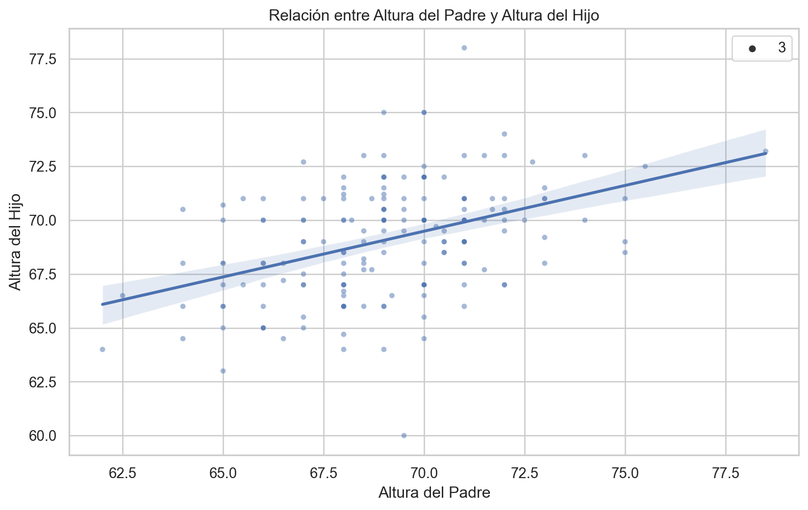
¿Regresión? ¿Y la correlación?
- Ambos están muy relacionados.
- Aprenderemos que el coeficiente de correlación es un resumen informativo de cómo dos variables se mueven juntas…
- y luego veremos cómo esto puede ser usado para predecir una variable usando la otra y modelado en una regresión
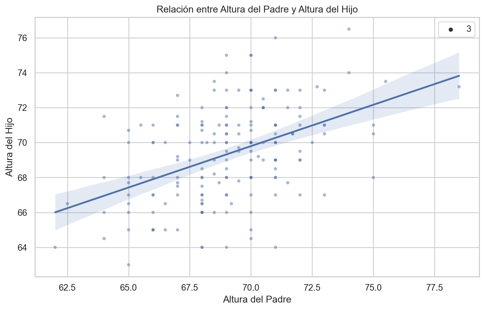
Taller de aplicación 2:
Caso aplicación: Cursos de Verano
Taller de aplicación 2: Pregunta 1
Considere los datos trabajados en el taller 1, sobre los cursos de verano. Recordemos la pregunta que queríamos responder:
Asistir a cursos de verano mejora los resultados académicos?
- Plantee un modelo de regresión con los datos disponibles que deseamos estimar.
- Grafique la dispersión y la recta de regresión estimada.
El coeficiente de correlación
El coeficiente de correlación se define para una lista de pares \((x_1,y_1),...(x_n,y_n)\) como la media de los productos de los valores normalizados:
\[ \rho = \frac{1}{n}\sum_{i=1}^{n} \big(\frac{x_i-\mu_x }{\sigma_x}\big)\big(\frac{y_i-\mu_y}{\sigma_y}\big) \]
Dónde \(\mu\) son promedios y \(\sigma\) son desviaciones estándar. La letra griega para r, \(\rho\) se utiliza comúnmente en los libros de estadística para denotar la correlación, porque es la primera letra de regresión. Pronto aprenderemos sobre la conexión entre correlación y regresión.
Podemos representar la fórmula anterior con el código R usando:
rho <- mean(scale(x) * scale(y))
La correlación entre las alturas del padre y del hijo es de aproximadamente \(0,4\):
El coeficiente de correlación
Podemos representar la fórmula anterior con el siguiente código usando:
0.9999999999999998El coeficiente de correlación
La correlación entre las alturas del padre y del hijo es de aproximadamente \(0,4\).
Coeficiente de Correlación: 0.4501189204142688import statsmodels.api as sm
import matplotlib.pyplot as plt
from sklearn.preprocessing import StandardScaler
# Cargar el conjunto de datos GaltonFamilies
galton_data = sm.datasets.get_rdataset("GaltonFamilies", package="HistData").data
# Filtrar por género masculino y seleccionar una muestra de una altura de hijo por familia
galton_heights = galton_data[galton_data['gender'] == 'male']\
.groupby('family')\
.apply(lambda group: group.sample(n=1))\
.reset_index(drop=True)\
.loc[:, ['father', 'childHeight']]\
.rename(columns={'childHeight': 'son'})
# Calcular la media y la desviación estándar de la altura del padre
mean_scaled_father = StandardScaler().fit_transform(galton_heights[['father']]).mean()
sd_scaled_father = StandardScaler().fit_transform(galton_heights[['father']]).std()
mean_father = galton_heights['father'].mean()
sd_father = galton_heights['father'].std()
print("Media de la Altura del Padre (Estandarizada):", mean_scaled_father)
print("Desviación Estándar de la Altura del Padre (Estandarizada):", sd_scaled_father)
print("Media de la Altura del Padre:", mean_father)
print("Desviación Estándar de la Altura del Padre:", sd_father)Media de la Altura del Padre (Estandarizada): 4.6046344887246715e-15
Desviación Estándar de la Altura del Padre (Estandarizada): 1.0
Media de la Altura del Padre: 69.09888268156423
Desviación Estándar de la Altura del Padre: 2.546555038637639El coeficiente de correlación
0.5104684885147245Para ver cómo se ven los datos para los diferentes valores de \(\rho\) aquí hay seis ejemplos de pares con correlaciones que van de -0,9 a 0,99:
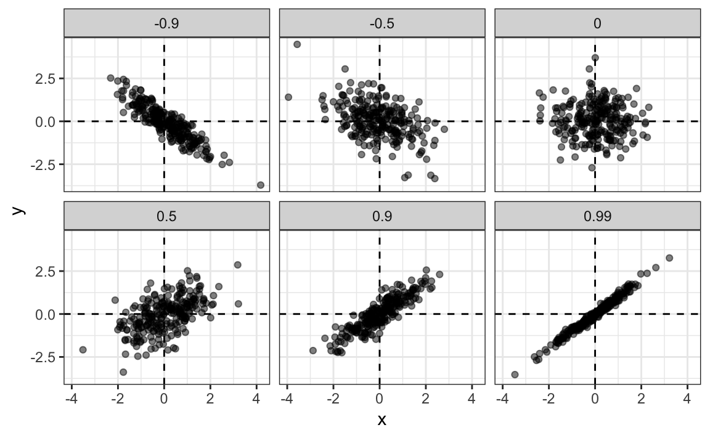image
La correlación es variable aleatoria
Antes de continuar conectando la correlación con la regresión, recordemos la variabilidad aleatoria.
En la mayoría de las aplicaciones de la ciencia de datos, observamos datos que incluyen variación aleatoria.
A modo de ejemplo, supongamos que las 179 parejas de padres e hijos son toda nuestra población. Un genetista menos afortunado sólo puede costear las mediciones de una muestra aleatoria de 25 pares. La correlación de la muestra se puede calcular con:
import pandas as pd
# Seleccionar una muestra aleatoria de tamaño 75 con reemplazo
R = galton_heights.sample(n=75, replace=True)
# Calcular el coeficiente de correlación entre las columnas "father" y "son"
correlation_coefficient = R[['father', 'son']].corr().iloc[0, 1]
print("Coeficiente de Correlación en la Muestra:", correlation_coefficient)Coeficiente de Correlación en la Muestra: 0.5072834085504967R es una variable aleatoria. Podemos ejecutar una simulación de Monte Carlo para ver su distribución:
- Nota: el objetivo principal de la simulación de Montecarlo es intentar imitar el comportamiento de variables reales para, en la medida de lo posible, analizar o predecir cómo van a evolucionar.
import pandas as pd
import numpy as np
import matplotlib.pyplot as plt
B = 1000
N = 100
R = np.zeros(B)
for i in range(B):
sample = galton_heights.sample(n=N, replace=False)
correlation_coefficient = sample[['father', 'son']].corr().iloc[0, 1]
R[i] = correlation_coefficient
# Crear un histograma de los coeficientes de correlación
plt.hist(R, bins=np.arange(-1, 1.1, 0.05), color='black')
plt.xlabel("Coeficiente de Correlación")
plt.ylabel("Frecuencia")
plt.title("Histograma de Coeficientes de Correlación")
plt.show()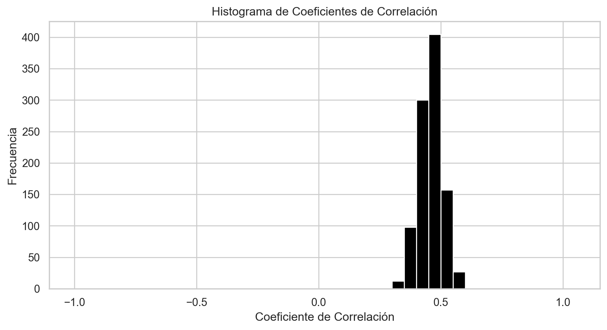
Vemos que el valor esperado de R es la correlación de la población:
Media de Coeficientes de Correlación: 0.45842882440885y que tiene un error estándar relativamente alto en relación con el rango de valores que puede tomar R:
Desviación Estándar de Coeficientes de Correlación: 0.047460810230179874Por lo tanto, al interpretar las correlaciones, recuerde que las correlaciones derivadas de las muestras son estimaciones que contienen incertidumbre.
Además, tenga en cuenta que debido a que la correlación de la muestra es un promedio de extracciones independientes, el teorema del límite central realmente funciona.
Por lo tanto, para \(N\) lo suficientemente grande la distribución de \(R\) es aproximadamente normal con el valor esperado \(\rho\).
La desviación estándar, que es algo compleja de derivar, es: \(\sqrt{\frac{1-r^2}{N-2}}\).
- En nuestro ejemplo, \(N=25\) no parece ser lo suficientemente grande para que la aproximación sea buena
-Si N aumenta verás que la distribución converge a una normal.
- Nota: El gráfico Q-Q, o gráfico cuantitativo, es una herramienta gráfica que nos ayuda a evaluar si un conjunto de datos proviene plausiblemente de alguna distribución teórica como una Normal o exponencial.
import pandas as pd
import numpy as np
import matplotlib.pyplot as plt
import scipy.stats as stats
# Crear un DataFrame con los coeficientes de correlación
df_R = pd.DataFrame({'R': R})
# Calcular la media y el tamaño de la muestra
mean_R = np.mean(R)
N = len(R)
# Crear el gráfico QQ-plot
plt.figure(figsize=(6, 6))
stats.probplot(df_R['R'], dist='norm', plot=plt)
plt.xlabel("Cuantiles Teóricos")
plt.ylabel("Cuantiles de R")
plt.title("Gráfico QQ-plot para los Coeficientes de Correlación")
plt.plot([np.min(R), np.max(R)], [np.min(R), np.max(R)], color='red') # Línea de referencia
plt.show()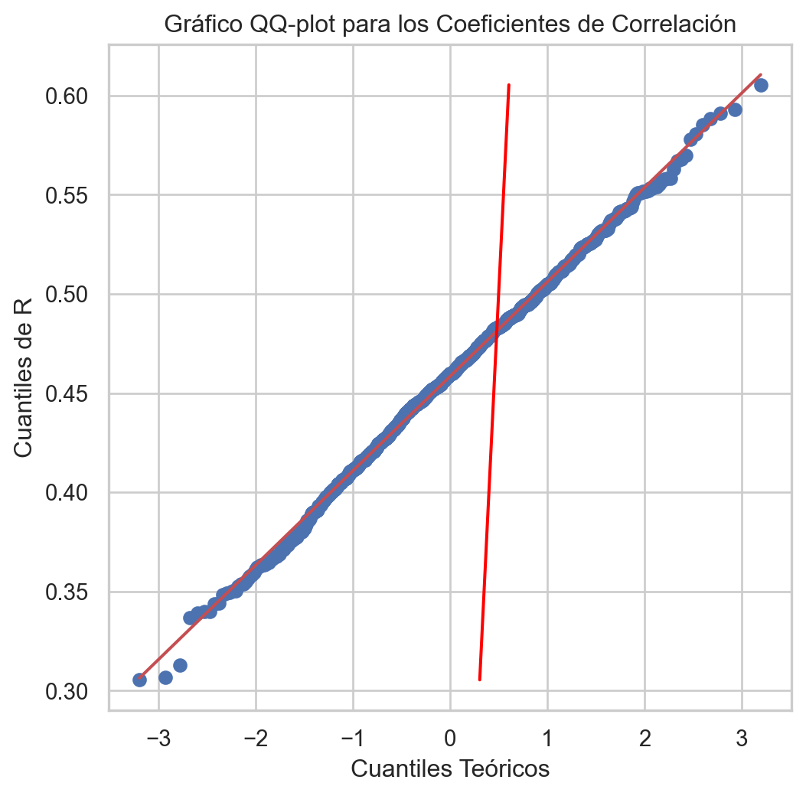
La correlación no siempre es un resumen útil
La correlación no siempre es un buen resumen de la relación entre dos variables. Los siguientes cuatro conjuntos de datos artificiales, conocidos como el cuarteto de Anscombe, ilustran este punto. Todos estos pares tienen una correlación de 0,82:
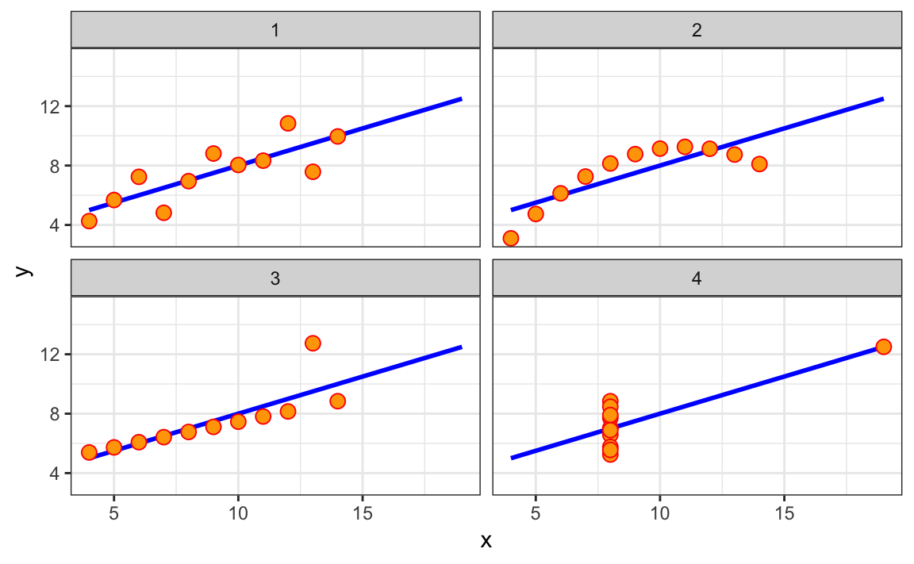image
La correlación sólo tiene sentido en un contexto particular. Para ayudarnos a entender cuándo es que la correlación es significativa como estadística de resumen, volveremos al ejemplo de predecir la estatura del hijo usando la estatura del padre. Esto ayudará a motivar y definir la regresión lineal. Comenzamos demostrando cómo la correlación puede ser útil para la predicción.
Correlación no es causalidad
La asociación no es causalidad es quizás la lección más importante que se aprende en una clase de estadística. Hay muchas razones por las que una variable \(X\) puede correlacionarse con una variable \(Y\) sin tener ningún efecto directo sobre \(Y\). Aquí examinamos tres maneras comunes que pueden llevar a una mala interpretación de los datos.
Correlación espuria
Vemos una fuerte correlación entre las tasas de divorcio y el consumo de margarina.
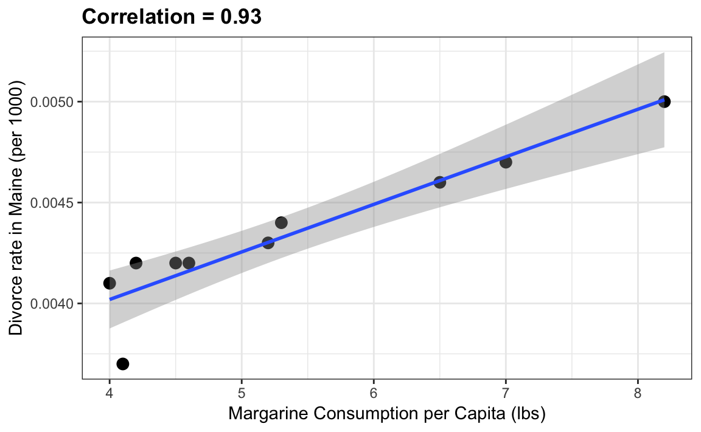image
(Acá pueden encontrar más http://tylervigen.com/old-version.html)
- ¿Significa esto que la margarina causa divorcios?
- ¿O los divorcios hacen que la gente coma más margarina?
La paradoja de Simpson
Se llama paradoja porque vemos el signo de la correlación cambiar cuando comparamos toda la data y estratos específicos.
Como ejemplo ilustrativo, supongamos que tiene tres variables aleatorias \(X\), \(Y\) y \(Z\) y que observamos realizaciones de estas.
Aquí está el gráfico de observaciones simuladas para \(X\) y \(Y\) a lo largo de la correlación de la muestra:
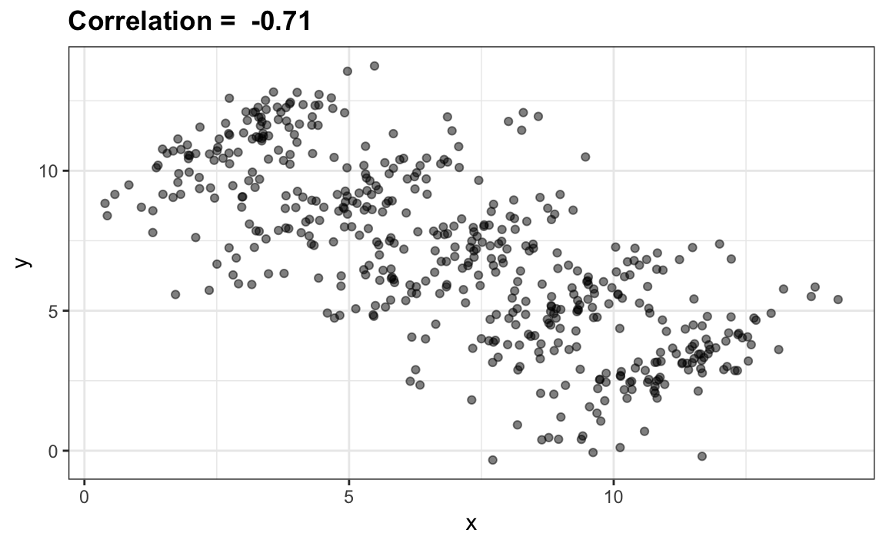
La paradoja de Simpson
- Puedes ver que \(X\) e \(Y\) están negativamente correlacionados.
- Sin embargo, una vez que estratificamos por \(Z\) (mostrado en diferentes colores abajo) emerge otro patrón:
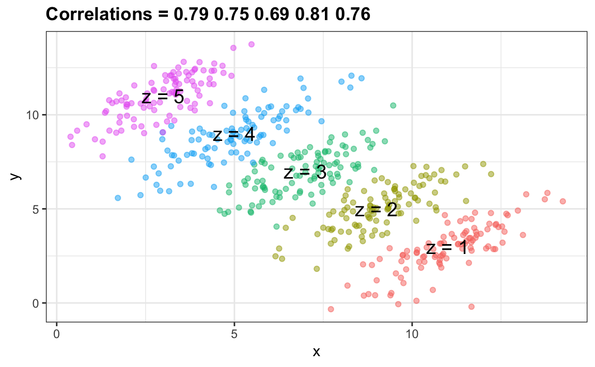
La paradoja de Simpson
- Es realmente \(Z\) que está negativamente correlacionado con \(X\).
- Si estratificamos por \(Z\) las variables \(X\) e \(Y\) están en realidad correlacionados positivamente como se ha visto en el gráfico anterior.
Expectativas condicionales
Supongamos que nos piden que adivinemos la altura de un hijo seleccionado al azar y no sabemos la altura de su padre.
Debido a que la distribución de las alturas de los hijos es aproximadamente normal, sabemos que la altura media, \(69.2\), es el valor con la mayor proporción y sería la predicción con mayores posibilidades de minimizar el error.
Pero, ¿y si nos dicen que el padre es más alto que el promedio, digamos que mide 72 pulgadas de alto, todavía esperaríamos que la altura más probable del hijo sea 69.2 pulgadas?
expectativas condicionales
- Resulta que si pudiéramos recolectar datos de un gran número de padres que miden 72 pulgadas…
- la distribución de las alturas de sus hijos sería normalmente distribuida.
- Esto implica que el promedio de la distribución calculada en este subconjunto sería nuestra mejor predicción.
expectativas condicionales
En general, llamamos a este enfoque condicional.
La idea general es que estratificamos una población en grupos y calculamos resúmenes en cada grupo.
Por lo tanto, el condicionamiento está relacionado con el concepto de estratificación descrito.
Porque la expectativa condicional \(E(Y|X=x)\) es el mejor predictor para la variable aleatoria \(Y\) para un individuo en los estratos definidos por \(X=x\) muchos de los desafíos de la ciencia de datos se reducen a la estimación de esta cantidad.
Expectativas condicionales
En el ejemplo que hemos estado considerando, estamos interesados en calcular la altura promedio del hijo condicionada a que el padre tenga 72 pulgadas de altura.
Queremos estimar \(E(Y|X=72)\) usando la muestra recolectada por Galton.
¿Cuantos padres miden 72?
Cantidad de registros con valor 72 en la columna 'father': 8- Si cambiamos el número a 72.5, obtenemos aún menos puntos de datos:
Expectativas condicionales
- Una forma práctica de mejorar estas estimaciones de las expectativas condicionales, es definir estratos con valores similares de \(x\).
- En nuestro ejemplo, podemos redondear las alturas paternas a la pulgada más cercana y asumir que todas son de 72 pulgadas.
- Si hacemos esto, terminamos con la siguiente predicción para el hijo de un padre que mide 72 pulgadas de alto:
Promedio condicional para father == 72: 70.44285714285715Expectativas condicionales
- Note que un padre de 72 pulgadas es más alto que el promedio – específicamente, 72 - 69.1/2.5 = 1.1 desviaciones estándar más alto que el padre promedio.
- Nuestra predicción, \(70.5\), es también más alta que el promedio, pero sólo \(0.49\) desviaciones estándar más grandes que el hijo promedio.
- Los hijos de padres de 72 pulgadas han regresado algunos a la estatura promedio.
- Observamos que la reducción en el número de SD más altas es de alrededor de \(0.5\), lo que resulta ser la correlación.
- Como veremos en una sección posterior, esto no es una coincidencia.
Expectativas condicionales
- Si queremos hacer una predicción de cualquier altura, no sólo de 72, podríamos aplicar el mismo enfoque a cada estrato.
- La estratificación seguida de los boxplots nos permite ver la distribución de cada grupo:
import pandas as pd
import seaborn as sns
import matplotlib.pyplot as plt
# Supongamos que tienes un DataFrame llamado 'galton_heights' con las columnas 'father' y 'son'.
# Crear una nueva columna 'father_strata' con los valores redondeados de 'father'
galton_heights['father_strata'] = galton_heights['father'].round().astype(int)
# Crear el gráfico de boxplots
plt.figure(figsize=(10, 6)) # Tamaño del gráfico
sns.boxplot(data=galton_heights, x='father_strata', y='son')
# Agregar puntos para mostrar las medias condicionadas
sns.swarmplot(data=galton_heights, x='father_strata', y='son', color='black', size=4)
plt.xlabel('father_strata')
plt.ylabel('son')
plt.title('Boxplots de son condicionado por father_strata con Medias Condicionadas')
plt.xticks(rotation=45) # Rotar etiquetas del eje x si es necesario
plt.show()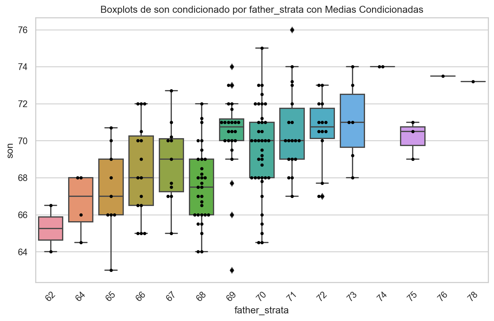
Expectativas condicionales
No es de extrañar que los centros de los grupos aumenten con la altura.
import pandas as pd
import matplotlib.pyplot as plt
# Redondear los valores de la columna "father"
galton_heights['father'] = galton_heights['father'].round()
# Calcular el promedio condicional de "son" para cada valor de "father"
conditional_avg_by_father = galton_heights.groupby('father')['son'].mean().reset_index()
# Crear un gráfico de puntos para mostrar el promedio condicional por "father"
plt.figure(figsize=(10, 6))
plt.scatter(conditional_avg_by_father['father'], conditional_avg_by_father['son'], color='blue')
plt.xlabel("Father Height")
plt.ylabel("Conditional Son Height Average")
plt.title("Promedio Condicional de Alturas de Hijos por Altura de Padres")
plt.show()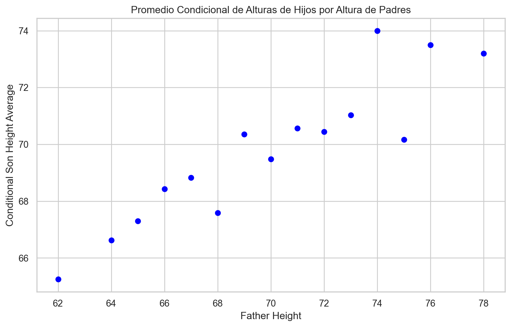
- Además, estos centros parecen seguir una relación lineal.
Expectativas condicionales
- A continuación se presentan los promedios de cada grupo.
- Si tenemos en cuenta que estos promedios son variables aleatorias con errores estándar, los datos son consistentes con estos puntos siguiendo una línea recta:
import pandas as pd
import matplotlib.pyplot as plt
import seaborn as sns
# Redondear los valores de la columna "father"
galton_heights['father'] = galton_heights['father'].round()
# Calcular el promedio condicional de "son" para cada valor de "father"
conditional_avg_by_father = galton_heights.groupby('father')['son'].mean().reset_index()
conditional_avg_by_father.head()
# Crear un gráfico de puntos con ajuste de regresión lineal
plt.figure(figsize=(10, 6))
sns.scatterplot(x='father', y='son', data=conditional_avg_by_father, color='blue')
sns.regplot(x='father', y='son', data=conditional_avg_by_father, scatter=False, color='orange')
plt.xlabel("Father Height")
plt.ylabel("Conditional Son Height Average")
plt.title("Promedio Condicional de Alturas de Hijos por Altura de Padres con Regresión Lineal")
plt.show()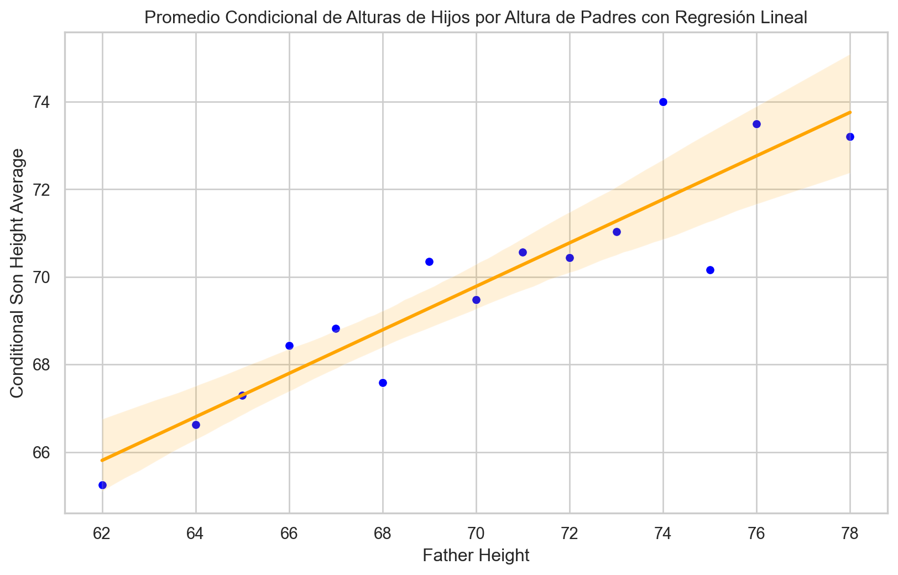
Expectativas condicionales
- El hecho de que estos promedios condicionales sigan una línea no es una coincidencia.
- En la siguiente sección, explicamos que la línea que siguen estos promedios es lo que llamamos la línea de regresión, que mejora la precisión de nuestras estimaciones.
- Sin embargo, no siempre es apropiado estimar las expectativas condicionales con la línea de regresión, por lo que también describimos la justificación teórica de Galton para usar la línea de regresión.
La línea/recta de regresión
- Si estamos prediciendo una variable aleatoria \(Y\) conociendo el valor de otra variable \(X=x\) usando una línea de regresión, entonces predecimos que para cada desviación estándar, \(\sigma_x\) que \(x\) aumenta por encima de la media \(\mu_x\), \(Y\) incrementa \(\rho\) veces la desviación estándar \(\sigma_Y\) sobre el promedio \(\mu_Y\), con \(\rho\) la correlación entre \(X\) e \(Y\). Por lo tanto, la formula de la regresión es:
\[ \left( \frac{Y-\mu_Y}{\sigma_Y} \right)=\rho \left(\frac{x-\mu_X}{\sigma_X}\right) \]
Lo que podemos reescribir como:
\[ Y=\mu_Y + \rho \big(\frac{x-\mu_X}{\sigma_X}\big) \sigma_Y \]
La línea/recta de regresión
Si existe una correlación perfecta, la línea de regresión predice un aumento que corresponde al mismo número de desviacones estándar.
Si hay correlación 0, entonces no usamos \(x\) en absoluto en la predicción y simplemente predecimos el promedio \(\mu_Y\).
Para valores entre 0 y 1, la predicción se encuentra en un punto intermedio.
Si la correlación es negativa, predecimos una reducción en lugar de un aumento.
Regresión a la media
- Nótese que si la correlación es positiva e inferior a 1, nuestra predicción está más cerca (en unidades estándar) de la altura media que de lo que el valor utilizado para predecir, \(x\), está del promedio de los \(x\).
- Por eso lo llamamos regresión: el hijo regresa a la estatura media.
- De hecho, el título del artículo de Galton era: Regresión a la mediocridad en la estatura hereditaria (Regression toward mediocrity in hereditary stature.).
La línea/recta de regresión
Para añadir líneas de regresión a los gráficos, necesitaremos la fórmula anterior en la forma: \(y=b+mx\), con pendiente \(m=\rho \sigma_y / \sigma_x\) e intercepto \(b=\mu_y - m \mu_x\)
Aquí agregamos la línea de regresión a la data original.
import pandas as pd
import numpy as np
import matplotlib.pyplot as plt
import seaborn as sns
# Cálculo de las medias y desviaciones estándar
mu_x = galton_heights['father'].mean()
mu_y = galton_heights['son'].mean()
s_x = galton_heights['father'].std()
s_y = galton_heights['son'].std()
# Cálculo del coeficiente de correlación
r = galton_heights['father'].corr(galton_heights['son'])
# Cálculo de la pendiente y el intercepto para la línea de regresión
m = r * s_y / s_x
b = mu_y - m * mu_x
# Configuración del tamaño de la figura
plt.figure(figsize=(10, 6))
# Crear un gráfico de dispersión con línea de regresión
sns.scatterplot(x='father', y='son', data=galton_heights, alpha=0.5, size=3)
sns.regplot(x='father', y='son', data=galton_heights, scatter=False, color='red', line_kws={'color': 'blue'})
plt.xlabel("Father Height")
plt.ylabel("Son Height")
plt.title("Relación entre Altura de Padres e Hijos con Línea de Regresión")
plt.show()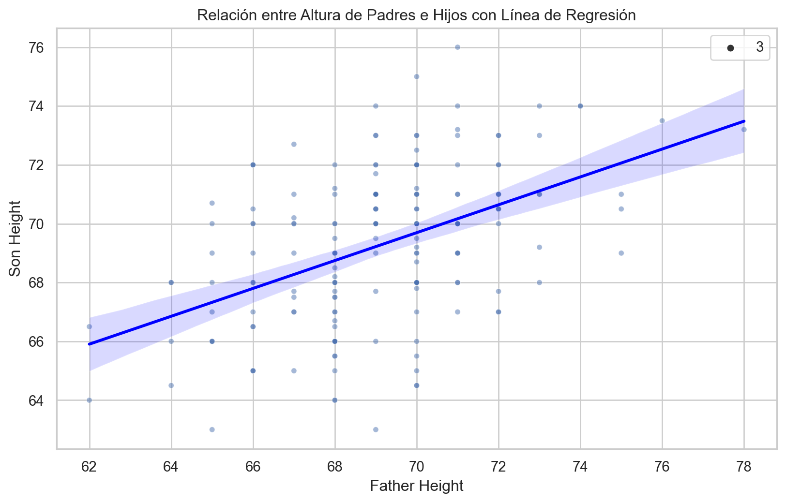
La línea/recta de regresión
- La fórmula de regresión implica que si primero estandarizamos las variables, es decir, restamos el promedio y dividimos por la desviación estándar, entonces la línea de regresión tiene intercepto 0 y pendiente igual a la correlación \(\rho\).
- Aquí está la misma gráfica, pero usando unidades estándar:
import pandas as pd
import numpy as np
import matplotlib.pyplot as plt
import seaborn as sns
# Supongamos que tienes un DataFrame llamado 'galton_heights' con las columnas 'father' y 'son'.
# Estandarizar las variables 'father' y 'son'
galton_heights['father_standardized'] = (galton_heights['father'] - galton_heights['father'].mean()) / galton_heights['father'].std()
galton_heights['son_standardized'] = (galton_heights['son'] - galton_heights['son'].mean()) / galton_heights['son'].std()
# Calcular la correlación de las variables estandarizadas
r = galton_heights['father_standardized'].corr(galton_heights['son_standardized'])
# Configuración del tamaño de la figura
plt.figure(figsize=(10, 6))
# Crear un gráfico de dispersión con línea de regresión
sns.scatterplot(x='father_standardized', y='son_standardized', data=galton_heights, alpha=0.5, size=3)
sns.regplot(x='father_standardized', y='son_standardized', data=galton_heights, scatter=False, color='red', line_kws={'color': 'blue'})
plt.xlabel("Father Height (Standardized)")
plt.ylabel("Son Height (Standardized)")
plt.title("Relación Estandarizada entre Altura de Padres e Hijos con Línea de Regresión (Intercepto = 0, Pendiente = Correlación)")
plt.show()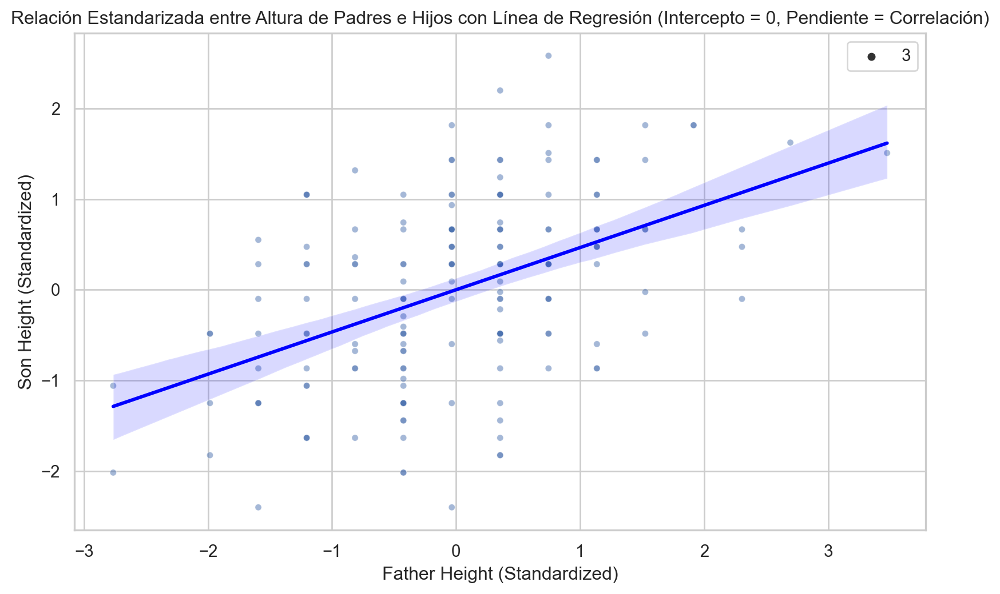
Regresión: Definición matemática
El modelo de regresión lineal (Legendre, Gauss, Galton y Pearson) considera que, dado un conjunto de observaciones \(\{y_i, x_{i1},...,x_{np}\}^{n}_{i=1}\) , la media \(𝜇\) de la variable respuesta \(𝑦\) se relaciona de forma lineal con la o las variables regresoras \(𝑥_1\) … \(x_p\) acorde a la ecuación:
\[\mu_y = \beta_0 + \beta_1 x_{1} + \beta_2 x_{2} + ... + \beta_p x_{p}\]
El resultado de esta ecuación se conoce como la línea de regresión poblacional, y recoge la relación entre los predictores y la media de la variable respuesta.
Regresión: Definición matemática
- Otra definición que se encuentra con frecuencia en los libros de estadística es:
\[y_i= \beta_0 + \beta_1 x_{i1} + \beta_2 x_{i2} + ... + \beta_p x_{ip} +\epsilon_i\]
- En este caso, se está haciendo referencia al valor de 𝑦 para una observación 𝑖 concreta. El valor de una observación puntual nunca va a ser exactamente igual al promedio, de ahí que se añada el término de error \(\epsilon\).
Interpretación:
En ambos casos, la interpretación de los elementos del modelo es la misma:
\(\beta_0\): es la ordenada en el origen, se corresponde con el valor promedio de la variable respuesta \(y\) cuando todos los predictores son cero.
\(\beta_j\): es el efecto promedio que tiene sobre la variable respuesta el incremento en una unidad de la variable predictora \(x_j\), manteniéndose constantes el resto de variables. Se conocen como coeficientes de regresión.
\(\epsilon\): es el residuo o error, la diferencia entre el valor observado y el estimado por el modelo. Recoge el efecto de todas aquellas variables que influyen en \(y\) pero que no se incluyen en el modelo como predictores.
Interpretación:
En la gran mayoría de casos, los valores \(\beta_0\) y \(\beta_j\) poblacionales se desconocen, por lo que, a partir de una muestra, se obtienen sus estimaciones \(\hat{\beta_0}\) y \(\hat{\beta_j}\).
Ajustar el modelo consiste en estimar, a partir de los datos disponibles, los valores de los coeficientes de regresión que maximizan la verosimilitud (likelihood), es decir, los que dan lugar al modelo que con mayor probabilidad puede haber generado los datos observados.
El método empleado con más frecuencia es el ajuste por mínimos cuadrados ordinarios (OLS)
- que identifica como mejor modelo la recta (o plano si es regresión múltiple)
- que minimiza la suma de las desviaciones verticales entre cada dato de entrenamiento y la recta, elevadas al cuadrado.
Magnitud y significancia
- La magnitud de cada coeficiente parcial de regresión depende de las unidades en las que se mida la variable predictora a la que corresponde, por lo que su magnitud no está asociada con la importancia de cada predictor.
- Una buena practica es estandarizar
Cuidado: hay dos líneas de regresión
Calculamos una línea de regresión para predecir la altura del hijo desde la altura del padre.
Usamos estos cálculos:
import numpy as np
# Calcular la media de las alturas del padre
mu_x = galton_heights['father'].mean()
# Calcular la media de las alturas del hijo
mu_y = galton_heights['son'].mean()
# Calcular la desviación estándar de las alturas del padre
s_x = galton_heights['father'].std()
# Calcular la desviación estándar de las alturas del hijo
s_y = galton_heights['son'].std()
# Calcular el coeficiente de correlación entre las alturas del padre y el hijo
r = galton_heights['father'].corr(galton_heights['son'])
print(r)
print(s_x)
print(s_y)
print(mu_x)
print(mu_y)0.4658308243792417
2.56441709039222
2.6076529186746025
69.08938547486034
69.263687150838pendiente 0.47368468778038647
constante 36.53710316324001Cuidado: hay dos líneas de regresión
¿Y si queremos predecir la estatura del padre basándonos en la del hijo?
Es importante saber que esto no se determina calculando la función inversa!.
Necesitamos computar \(E(X∣Y=y)\). Dado que los datos son aproximadamente normales bivariados, la teoría descrita anteriormente nos dice que esta expectativa condicional seguirá una línea con pendiente e intercepto:
pendiente 0.4581071808731349
constante 37.35919301731116Cuidado: hay dos líneas de regresión
Aquí hay un gráfico que muestra las dos líneas de regresión:
con azul para la predicción de las alturas del hijo con las alturas del padre y rojo para la predicción de las alturas del padre con las alturas del hijo.
import matplotlib.pyplot as plt
import seaborn as sns
# Crear el gráfico utilizando Matplotlib y Seaborn
plt.figure(figsize=(10, 6))
sns.scatterplot(data=galton_heights, x='father', y='son', alpha=0.5)
plt.plot(galton_heights['father'], b_1 + m_1 * galton_heights['father'], color='blue', label='y = b_1 + m_1 * x')
plt.plot(galton_heights['father'], -b_2/m_2 + 1/m_2 * galton_heights['father'], color='red', label='y = -b_2/m_2 + 1/m_2 * x')
plt.legend()
plt.xlabel('Father Height')
plt.ylabel('Son Height')
plt.title('Scatter Plot with Regression Lines')
plt.show()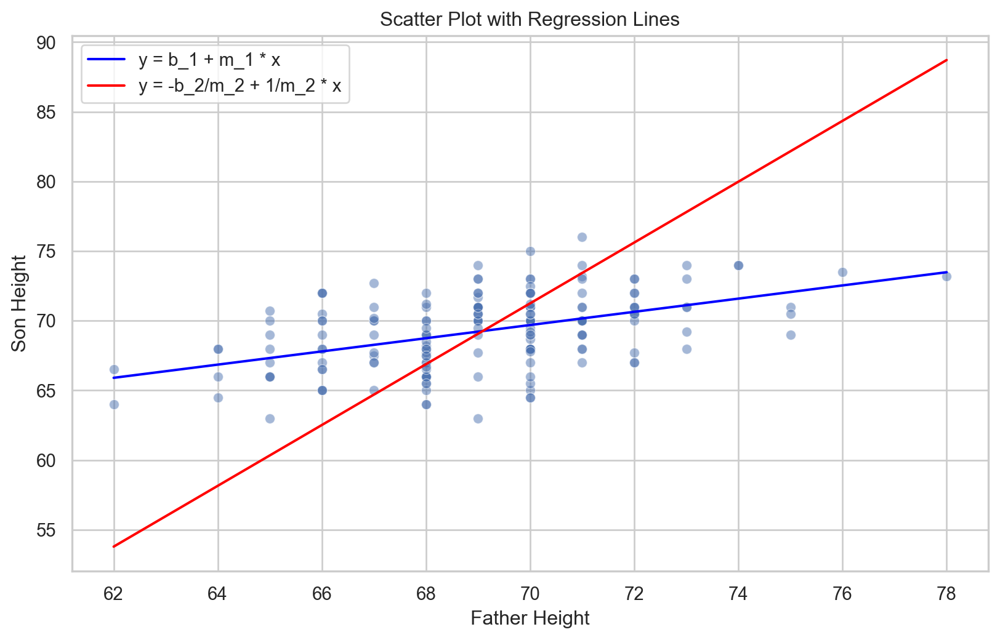
Taller aplicación 2: ALtura de madres, padres, hijos e hijas
Taller aplicacción 2: Altura de madres, padres, hijos e hijas
Cargue los datos de
GaltonFamiliesdesde el HistData. Los niños de cada familia están ordenados por sexo y luego por estatura. Cree un conjunto de datos llamadogalton_heightsseleccionando niños y niñas al azar. (HINT: usesample).Haga una gráfica para las alturas entre madres e hijas, madres e hijos, padres e hijas, y padres e hijos.
Calcular la correlación para alturas entre madres e hijas, madres e hijos, padres e hijas, y padres e hijos.
Plotear las correalciones sobre cada grafica defindia en 2 (linea de regresion).
Obtener el modelo de regresión e interpretar los coeficientes.
Curso Análisis de Datos - Sesión 3